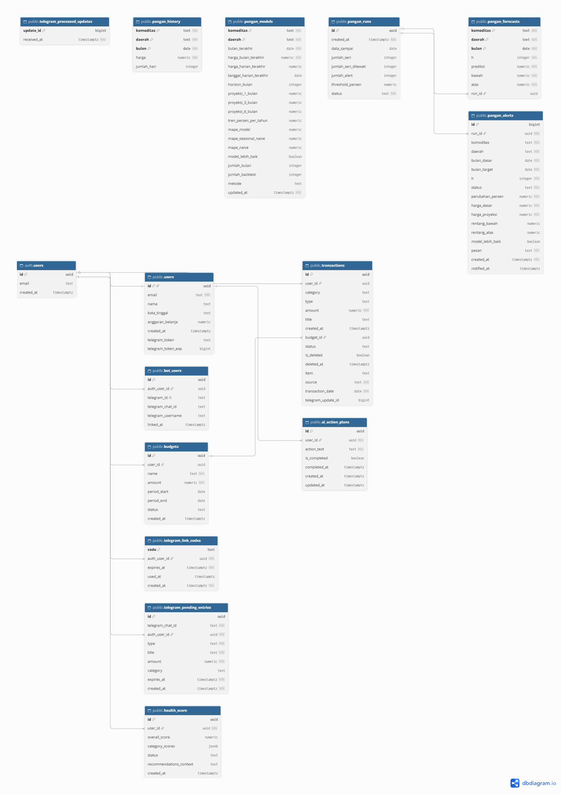

Dapur Tenang, Dompet Senang.
Kumpulan dokumen pengumpulan final project Bootcamp AI Full-Stack Web Development 2026. Klik kartu untuk melompat ke bagian, klik tombol "Buka" untuk tautan.
Ibu rumah tangga perkotaan yang memegang uang belanja dengan jadwal pemasukan tetap sulit mengetahui lebih awal apakah uang belanja pangan cukup sampai pemasukan berikutnya. Harga pangan berubah-ubah, pencatatan terasa memberatkan, dan kekurangan baru diketahui saat uang menipis, lalu ditutup dengan tabungan atau pinjaman yang dapat mengganggu arus kas periode berikutnya.
Persona: Vivin, 35 tahun, ibu rumah tangga, memegang uang belanja keluarga. Versi awal mendukung pemasukan berjadwal tetap (bulanan atau mingguan) di wilayah perkotaan; jadwal tidak tetap belum didukung.
| Fitur | Isi | Tahap |
|---|---|---|
| Monitoring pengeluaran | Catat, kategori, anggaran, bot Telegram | Utama |
| Pantau dan aksi | Sisa uang, indikator sisa belanja pangan, skor finansial | Utama |
| Prediksi harga pangan | Data PIHPS dan model ML, tampil sebagai perkiraan | Kedua |
| Saran AI dan pemasukan tambahan | Saran dari skor, katalog ide dikurasi | Kedua |
Akun bersama pasangan, pemasukan harian atau tidak tetap, dan klaim perbaikan ekonomi keluarga. Prediksi adalah perkiraan, saran usaha adalah inspirasi, dan SAKUPUAN bukan nasihat keuangan.
| ID | Sebagai ibu rumah tangga, saya ingin | Agar | Kriteria penerimaan |
|---|---|---|---|
| US-1 | mendaftar dan mengisi jadwal serta jumlah uang belanja | perhitungan sesuai kondisi saya | Daftar berhasil; periode terbentuk dari jadwal |
| US-2 | mencatat belanja lewat website | pengeluaran terekam | Catatan tampil di daftar dan mengurangi sisa uang |
| US-3 | mencatat lewat Telegram dengan satu pesan | tidak perlu membuka website | "sayur 35000" menjadi catatan setelah konfirmasi |
| US-4 | melihat sisa uang dan sisa hari | tahu apakah uang cukup | Sisa dan rata-rata per hari tampil di beranda dan /sisa |
| US-5 | melihat perkiraan harga pangan | bersiap sebelum berbelanja | Tampil sebagai rentang atau arah, berlabel perkiraan |
| US-6 | melihat skor dan statusnya | memahami kondisi periode ini | Skor 0-100, status, peringatan arus kas, label sementara |
| US-7 | menerima saran singkat dari AI | tahu langkah berikutnya | Saran muncul; bila AI gagal, saran cadangan tampil |
| US-8 | melihat ide pemasukan tambahan saat skor 0-39 | punya pilihan lain | Muncul setelah saya menekan tombol; ide dari katalog (?) |

| Kelompok | Tabel |
|---|---|
| Akun dan bot | auth.users, users, bot_users, telegram_link_codes, telegram_processed_updates, telegram_pending_entries |
| Keuangan | transactions, budgets |
| Skor dan saran | health_score, ai_action_plans |
| Harga pangan dan ML | pangan_runs, pangan_models, pangan_history, pangan_forecasts, pangan_alerts |
Ekspor skema lengkap dari Supabase (Schema Visualizer, Copy as SQL) ke file schema.sql, lalu tambahkan seed berikut. Seed hanya berisi data fiktif; user_id harus berisi id akun yang ada di auth.users.
-- Tabel tambahan untuk bot Telegram (ringkas)
create table if not exists telegram_link_codes (
code text primary key,
auth_user_id uuid not null references auth.users(id) on delete cascade,
expires_at timestamptz not null, used_at timestamptz,
created_at timestamptz not null default now());
alter table transactions add column if not exists source text not null default 'web';
alter table transactions add column if not exists account text;
-- Seed contoh (data fiktif)
insert into budgets (user_id, name, amount, period_start, period_end, status)
values ('<UUID-PENGGUNA>', 'Uang belanja', 2000000, '2026-11-01', '2026-11-30', 'active');
insert into transactions (user_id, type, category, title, item, amount, source, status, transaction_date)
values ('<UUID-PENGGUNA>', 'expense', 'belanja-dapur', 'Beras', 'Beras', 75000, 'web', 'confirmed', '2026-11-03'),
('<UUID-PENGGUNA>', 'expense', 'tabungan', 'Nabung', 'Nabung', 200000, 'web', 'confirmed', '2026-11-04');Semua endpoint di bawah /api membutuhkan login (token Supabase Auth di header Authorization: Bearer), kecuali register dan login.
| Metode dan alamat | Request / response |
|---|---|
| GET /api/action-plans | Login: Publik atau diperiksa di tempat lain (cek manual). Keluar: { success: false, message: "Unauthorized" }, { status: 401 } |
| POST /api/action-plans | Login: Publik atau diperiksa di tempat lain (cek manual). Keluar: { success: false, message: "Data tidak lengkap" }, { status: 400 } |
| PUT /api/action-plans | Login: Publik atau diperiksa di tempat lain (cek manual). Keluar: { success: false, message: "ID plan tidak ditemukan" }, { status: 400 } |
| POST /api/advisor/chat | Login: Wajib login. Masuk: message: string, city?: string. Keluar: { reply: dataAi.reply, suggestion: dataAi.suggestion || undefined, incomeIdea: selectedIdea, source: "ai", } |
| POST /api/auth/login | Login: Publik atau diperiksa di tempat lain (cek manual). Masuk: email: string, password: string. Keluar: { user: publicUser(user), telegramConnected: telegram.connected }, { headers: { "Set-Cookie": sessionCookie(user.id) } } |
| POST /api/auth/logout | Login: Publik atau diperiksa di tempat lain (cek manual). Keluar: { ok: true }, { headers: { "Set-Cookie": clearSessionCookie() } } |
| GET /api/auth/me | Login: Opsional. Keluar: { user: user ? publicUser(user) : null } |
| POST /api/auth/register | Login: Publik atau diperiksa di tempat lain (cek manual). Masuk: name: string, email: string, password: string. Keluar: { user: publicUser(user) }, { status: 201, headers: { "Set-Cookie": sessionCookie(user.id) } } |
| GET /api/budgets | Login: Wajib login. Keluar: { budgets: data || [] } |
| POST /api/budgets | Login: Wajib login. Keluar: { budget: data }, { status: 201 } |
| GET /api/forecast/prices | Login: Publik atau diperiksa di tempat lain (cek manual). Keluar: { error: 'Gagal mengambil data harga' }, { status: 500 } |
| GET /api/health | Login: Publik atau diperiksa di tempat lain (cek manual). Keluar: { ok: true, time: new Date().toISOString() } |
| GET /api/profile | Login: Wajib login. Keluar: { user: publicUser(await requireUser(request)) } |
| PATCH /api/profile | Login: Wajib login. Masuk: name: string, email: string. Keluar: { user: publicUser(updated) } |
| POST /api/scoring | Login: Publik atau diperiksa di tempat lain (cek manual). Keluar: { success: true, data: hasilSkor }, { status: 200 } |
| POST /api/telegram/link | Login: Wajib login. Keluar: { token, deeplink: `https://t.me/${env.telegramBotUsername}?start=${token}`, expiresInMinutes: 15, } |
| GET /api/telegram/status | Login: Wajib login. Keluar: await db.getTelegramStatus(user.id) |
| GET /api/transactions | Login: Wajib login. Keluar: { periods: buildPeriods(all.map((t) => t.period)), accounts: DEFAULT_ACCOUNTS, transactions, } |
| POST /api/transactions | Login: Wajib login. Masuk: flow: salah satu: ["in", "out"], cat: string, title: string, amount: number. Keluar: { transaction: mapRowToTransaction(data) }, { status: 201 } |
Fungsi Supabase telegram-bot menerima POST dari Telegram dan menolak permintaan tanpa header x-telegram-bot-api-secret-token yang cocok.
| Komponen | Teknologi | Peran |
|---|---|---|
| Saran dari skor dan ide pemasukan | Google Gemini, dipanggil dari server | Menulis ringkasan dan langkah singkat; untuk skor 0-39 memilih ide dari katalog |
| Prediksi harga pangan | Machine learning dari data PIHPS | Perkiraan harga sebagai rentang atau arah |
| Pembaca pesan Telegram | Aturan kata kunci (tanpa AI) | Mengenali nominal, kategori, dan jenis catatan |
lib/scoring.js), bukan AI.lib/incomeIdeas.js), dan AI hanya memilih id dari hasil saringan.GEMINI_API_KEY di .env.local dan Vercel), tanpa awalan NEXT_PUBLIC_.AI_SERVICE_URL, GEMINI_API_KEY, GEMINI_MODEL
# SAKUPUAN Dapur Tenang, Dompet Senang. Website pencatatan uang belanja untuk ibu rumah tangga: tahu lebih awal apakah uang belanja pangan cukup sampai periode berikutnya. Demo: sakupuan.vercel.app ## Fitur - Pencatatan pengeluaran dan pemasukan lewat bot Telegram - Sisa uang belanja, skor finansial, dan saran dari AI - Perkiraan harga pangan (data PIHPS) - Ide pemasukan tambahan dari katalog (skor 0-39) ## Teknologi Next.js, Supabase (database, Auth, Edge Function), Vercel, Telegram Bot API, Google Gemini API ## Menjalankan di komputer Prasyarat: Node.js 20 atau lebih baru, akun Supabase, token bot dari @BotFather, kunci Gemini. 1. git clone https://github.com/nrizkaandina/ra-kartini.git lalu cd main 2. npm install 3. Salin .env.example menjadi .env.local lalu isi: NEXT_PUBLIC_SUPABASE_URL, NEXT_PUBLIC_SUPABASE_ANON_KEY, SUPABASE_SERVICE_ROLE_KEY, TELEGRAM_BOT_TOKEN, TELEGRAM_WEBHOOK_SECRET, TELEGRAM_BOT_USERNAME, AI_SERVICE_URL GEMINI_API_KEY, GEMINI_MODEL 4. Buat tabel: jalankan schema.sql di SQL Editor Supabase (seed opsional: seed.sql) 5. npm run dev lalu buka http://localhost:3000 ## Fitur AI Skor dihitung rumus biasa (lib/scoring.js). Server mengirim hanya angka ringkasan ke Gemini (lib/gemini.js), balasan JSON diperiksa skema, dan saran cadangan dipakai bila AI gagal. Untuk skor 0-39, AI hanya memilih ide dari katalog (lib/incomeIdeas.js). Uji kunci: node --env-file=.env.local scripts/uji-gemini.mjs ## Bot Telegram Kode di supabase/functions/telegram-bot. Pasang dengan: npx supabase functions deploy telegram-bot --no-verify-jwt, lalu daftarkan webhook dengan secret_token. ## Keterbatasan Prediksi adalah perkiraan, saran usaha adalah inspirasi, dan SAKUPUAN bukan nasihat keuangan. ## Tim Nurviani Rizka Andina - Project Manager | Business Analyst | Full-Stack Developer | DevOps Engineer Siti Nur'aisa Mansur - UX Researcher | Front-End Developer | QA | Copywriter